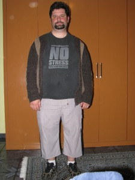

vamo, vamo, vamo…
Alecão
Engenheiro de Software que mora em Santo André-SP
Home page: http://www.dundes.com/wiki/Alex/HomePage
Jabber/GTalk: alex.dundes@gmail.com
Posts by Alecão
Não achei o Thiago
47 years
by Alecão
in Ex-sedentário
Estivemos eu e família na meia maratona de SBC. Procurei o Thiago mas não achei. :~(
.jpg "IMG_7301 (1024x768)")
.jpg "IMG_7302 (768x1024)")
.jpg "IMG_7303 (1024x768)")
.jpg "IMG_7304 (1024x768)")
.jpg "IMG_7305 (768x1024)")
.jpg "IMG_7306 (1024x768)")
.jpg "IMG_7307 (1024x768)")
.jpg "IMG_7308 (1024x768)")
.jpg "IMG_7309 (1024x768)")
.jpg "IMG_7310 (1024x768)")
.jpg "IMG_7311 (1024x768)")
.jpg "IMG_7312 (1024x768)")
.jpg "IMG_7313 (1024x768)")
.jpg "IMG_7314 (1024x768)")
.jpg "IMG_7315 (1024x768)")
Mais fotos da família deste dia no outro blog.
Trilha sonora para o treino
77 years
by Alecão
in Ex-sedentário
 Hoje de manhã fiquei pensando nas músicas que me “aceleravam”, fica aqui a dica, coloque no MP3 e ponha para escutar no fim do treino:
Hoje de manhã fiquei pensando nas músicas que me “aceleravam”, fica aqui a dica, coloque no MP3 e ponha para escutar no fim do treino:
E você o que costuma escutar no treino?
Como você pretende encarar esse desafio?
17 years
by Alecão
in Ex-sedentário
Este desafio (5 quilometros, da maratona de revezamento do Pão de Açucar) é uma forma de voltar, de emagrecer e afastar os fantasmas que me assustam (possíveis problemas cardíacos futuros). Quando vou ao cardiologista, apesar de meus exames darem 100%, eles me colocam medo por causa do sobre-peso.
Para mim, o desafio significa o início da longevidade, dar mais uma alegria aos meus filhos e provar a mim mesmo que é possível sim conseguir quando muitos dizem o contrário.
.jpg "5-desafio-mata-atlantica")
5º Desafio da Mata Atlântica
127 years
by Alecão
in Ex-sedentário
Estava gripado e sem coragem de ir, mas o Thiago me incentivou e o Claudio também. E fui. Não me arrependi, foi maravilhoso mesmo com a gripe piorando quando cheguei em casa (tive muitas dores, nausea, ansia e febre), mas nada que um analgésico e 4 horas de soneca não resolvessem. To com gostinho de quero mais…
Nesta prova tivemos a oportunidade de conhecer o Enio integrante dos Baleias, muito bacana, gostei mesmo dele, nos incentivou bastante.
Sem mais enrolação, estou colocando as fotos que tiramos… São mais de 200 e tem mais para colocar, volte depois e olhe as fotos novas. Tem vídeo também que ainda estou editando e colocarei em outro post.
Ninguém merece
27 years
by Alecão
in Ex-sedentário

Estou gripado a 2 dias, peguei de minha esposa (impossível não pegar)… Essa época do ano é sempre assim. Duro é que o corpo fica mole, corisa, dores, insônia e desanima até ir a pé para ponto de ônibus. Mas o duro mesmo é esperar para voltar a rotina de treinos. PASSA LOGO!
Idéia para acabar com a seca
57 years
by Alecão
in Ex-sedentário
Tive uma idéia para acabar com a seca nas regiões semi-áridas. Basta eu ir para lá e planejar fazer um treino.
Para cima!
67 years
by Alecão
in Ex-sedentário
A caminhada de ontem, vendo no map my run, mostrou que não é um trajeto adequado.

Hoje, apesar de um treino menor (34 minutos), procurei fazer um caminho que eu subisse. E a partir de agora será sempre para cima.

Caminhando…
37 years
by Alecão
in Ex-sedentário
Hoje de manhã ao invés de sapato calcei um tênis e coloquei o sapato na mochila. Caminhei por 1 hora até chegar a av. Goias e de lá peguei o ônibus, no terminal Sacomã, evitei as escadas rolantes (seguindo a lição de casa do Claudião)… E vamo treinando…
E sim, sou insano mas sou prudente, particularmente fiquei assustado com alguns comentários, mas gostei, porque pelo susto acabei levando mais a sério a rotina de treinos… Brigadão pessoal.
Vacinas e Insanidade…
87 years
by Alecão
in Ex-sedentário
Hoje estou em home-office (chique não) e resolvi treinar antes de almoçar.
Estava eu congelando de frio em casa e encarar o sol na rua mais um aquecimento era mais do que necessário. Sai de casa e caminhei uma ladeirinha (nem marquei o tempo) e então comecei a trotar em uma descida. Mas então comecei a sentir o cansaço. Foi ai que lembrei que ontem de manhã tomei 2 vacinas, a contra a H1N1 e a segunda dose de anti-tétano. Estava contente porque a unica coisa que havia percebido era uma coriza de manhã. Mas no trote percebi que estava com o corpo debilitado. Fui neste trote por 8:17 minutos e então comecei a andar, parei no caixa eletrônico (que fila) e o corpo esfriou, nota mental: não interromper o treino para fazer favores. Voltei a andar em uma subida, ao todo foram 9:35 minutos andando e acabando a subida voltei a trotar até em casa. Mais 9:39 minutos. Ao todo foram 27:32 minutos (tempos precisos graças ao novo relógio, que memoriza… hehehehe).
Mas e essa “Insanidade” no título?
Calma, calma, vou falar. É que o Claudio me chamou para participar da 5º desafio da Mata Atlântica. São 7,5 Km de subida, o Claudio vai tentar correr, eu me dou por satisfeito em andar… Me acho insano de aceitar o desafio e me inscrever por impulso. Mas só assim mesmo para sair da inércia. E por isso da minha volta ao treinos. Mas acredito que com determinação conseguirei terminar a prova. Afinal temos que estabelecer objetivos realistas.
Tem mais algum insano por ai?
Vinte quatro minutos
47 years
by Alecão
in Ex-sedentário
Ontem, com o Maurício a tira colo, trotei por 24 minutos na rua de lazer que tem aos domingos na av. Presidente Kennedy em São Caetano do Sul.
Para o Maurício era uma brincadeira, corria rápido e sentava na guia para me esperar… Mas depois de 15 minutos, ele começou a ficar cansado e em alguns momentos eu trotei com ele no colo. Mas fora isso estou orgulhoso do meu filho de 5 anos ter conseguido me acompanhar neste treino que marca a minha volta em definitivo.
Vocês estavam com saudades!!! hein?
.jpg "DSC01748 (576x1024)")
.jpg "DSC01803 (1024x576)")
.jpg "DSC01870 (1024x576)")
.jpg "DSC01898 (576x1024)")
.jpg "DSCN5635 (1024x768)")


{kind=link}
{kind=link}
Últimos comentários